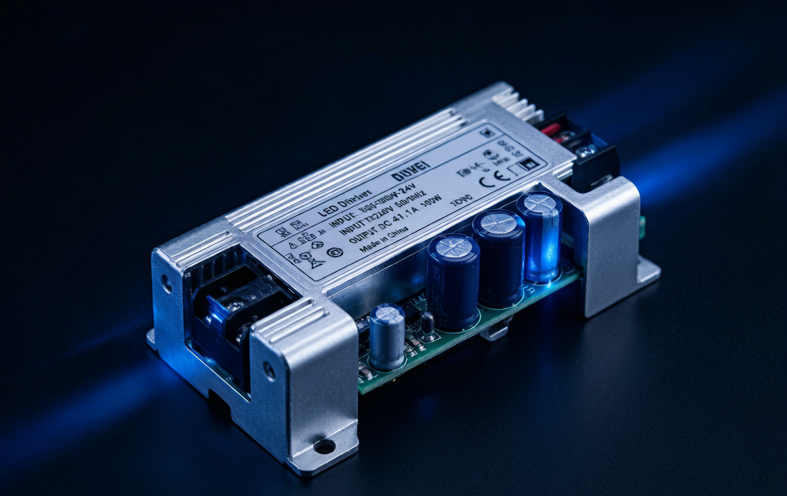
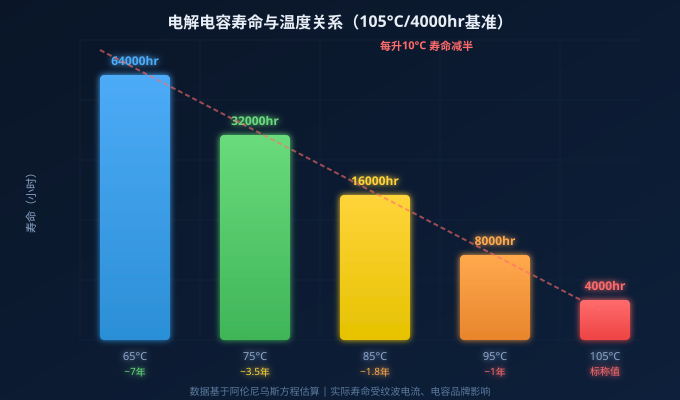
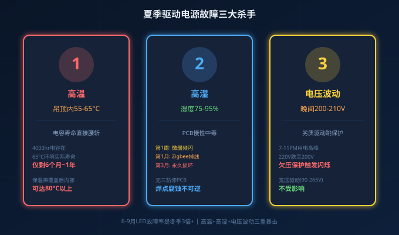
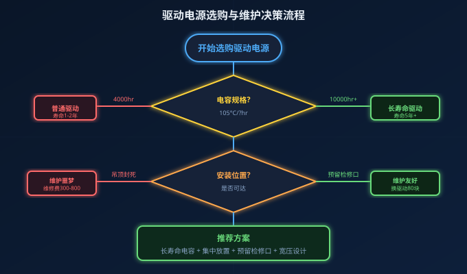

朋友圈刷到一条吐槽："入住第三年，客厅灯带突然不亮了。电工拆了半天吊顶才找到变压器，外壳都烧变形了。换一个80块，拆吊顶补石膏板花了300。早知道还不如装主灯。"
这不是个例。金鉴实验室的统计数据显示：超过80%的LED灯具失效，罪魁祸首不是灯珠，而是驱动电源。LED芯片理论寿命5万小时以上，但驱动电源里的电解电容，可能连1万小时都撑不到。
今天就把驱动电源为什么总是先坏、怎么选才能用满5年这件事讲透。
一、驱动电源为什么总是先挂？电解电容是"命门"
LED灯珠是半导体器件，理论寿命5-10万小时，连续点亮能用6年以上。但驱动电源里的电解电容，是一个有确定寿命的消耗性元件——它决定了整个灯具的实际使用寿命。

核心规律叫**"阿伦尼乌斯方程"**，翻译成大白话就是：
电解电容工作温度每升高10°C，寿命缩短一半。
一个标称105°C/4000小时的电解电容：
- 在65°C环境下工作 → 寿命约64000小时（≈7年）
- 在75°C环境下工作 → 寿命约32000小时（≈3.5年）
- 在85°C环境下工作 → 寿命约16000小时（≈1.8年）
- 在95°C环境下工作 → 寿命约8000小时（≈1年不到）
问题在于：无主灯设计中，驱动电源往往被塞进吊顶石膏板里、定制柜顶板后面、窗帘盒死角处。夏季吊顶内温度轻松突破55-65°C，密闭空间甚至更高。一个4000小时的电容，在这种环境下实际寿命可能只有6个月到1年。
二、夏季是驱动电源"死亡高峰期"，三个杀手同时发力
每年6-9月，LED灯具故障率是冬天的3倍以上。原因不是单一的高温，而是高温+高湿+电压波动三重暴击：

1. 高温：电容寿命直接腰斩 南方夏季吊顶内温度可达55-65°C，电解电容的寿命在这个温度区间急剧下降。如果电源还被保温棉覆盖，内部温度可能飙到80°C以上，4000小时电容的实际寿命不到半年。
2. 高湿：PCB慢性中毒 南方梅雨季湿度75-95%，没有三防漆涂覆的PCB会缓慢吸潮。第1周：微弱频闪（微漏电）；第1个月：频繁掉线（Zigbee信号衰减30-50%）；第3个月：永久损坏（焊点腐蚀）。
3. 电压波动：晚间用电高峰暴露劣质驱动 晚上7-11点是家庭用电高峰，空调+热水器+厨房电器同时运行，电压可能从220V跌到200-210V。劣质驱动的欠压保护阈值设在200V，一到晚上就跳保护，灯就开始闪。
三、无主灯维护的"隐形大坑"：找不到的变压器
这是无主灯设计中最让人崩溃的问题。施工阶段，电工为了追求视觉极简，把变压器藏在各种匪夷所思的位置：
- 吊顶石膏板里面（没留检修口）
- 定制柜顶板后面（被板材封死）
- 窗帘盒死角里（手根本伸不进去）
入住两三年后灯带不亮了，大概率是变压器烧了。这时候你要面对的是一场"寻宝游戏"：顺着吊顶摸、拆柜子背板、甚至锯开石膏板。换一个80块的变压器，维修成本可能高达500-800块。

避坑建议：
- 集中放置：所有低压灯带的变压器集中放在强电箱旁、电视柜下方或空调检修口附近
- 拍照留底：水电验收时拍下每个变压器的位置，标注在图纸上
- 预留检修口：吊顶内必须留检修口，尺寸不小于200×200mm
- 外置驱动：智能筒灯/射灯优先选外置驱动型号，驱动放在灯具外部可达位置
四、选购长寿命驱动电源，盯住这4个硬指标
与其后期维修，不如前期选对。2026年选购LED驱动电源，以下4个指标比品牌和价格更重要：
| 指标 | 普通驱动 | 长寿命驱动 | 为什么重要 |
|---|---|---|---|
| 电容规格 | 105°C/4000hr | 105°C/10000hr+ | 电容寿命=驱动寿命，差2.5倍 |
| 工作温度 | -20~+50°C | -40~+70°C | 吊顶高温环境下不降额 |
| 电压范围 | 220V±10% | 90-265V宽压 | 晚间电压跌落不跳保护 |
| 防护等级 | IP20裸板 | IP54+三防漆 | 梅雨季PCB不吸潮 |
额外加分项：
- 涂鸦Zigbee/蓝牙Mesh调光：驱动集成无线模块，省去额外接线
- NFC编程：出厂参数可现场调整，无需更换硬件
- DALI-2/D4i认证：商业照明互联互通标准，未来5年不过时
- 0-10V/PWM/可控硅多协议兼容：一套驱动适配多种调光方案
五、已经装好了怎么办？3个低成本延长寿命的方法
如果你家无主灯已经装好了，驱动电源也藏在吊顶里了，别慌。以下3个方法可以低成本延长驱动寿命：
1. 加一个小风扇（成本¥15-30） 在驱动电源附近安装一个低噪音轴流风扇（≤28dB），强制对流散热。实测可降低驱动内部温度8-15°C，寿命延长1-2年。
2. 每半年清理一次散热孔（成本¥0） 用压缩空气或软毛刷清理驱动外壳散热孔和灯具散热鳍片的积尘。灰尘是隐形的隔热层，积灰1mm可使散热效率下降20%。
3. 智能场景避免满功率长时间运行（成本¥0） 通过涂鸦App设置"日常模式"（60-70%亮度）和"会客模式"（100%亮度）。驱动长期满载运行温度最高，降功率使用可显著降低电容工作温度。
总结
驱动电源是无主灯系统中最容易被忽视、却最容易出问题的环节。记住三个关键数字：
- 80%——LED灯具故障中驱动电源问题的占比
- 10°C——电解电容温度每升高10°C寿命减半
- 10000小时——长寿命驱动电容的最低门槛（普通驱动只有4000小时）
选购时盯住电容规格、工作温度、电压范围、防护等级四个硬指标，安装时确保驱动可达可换，使用时注意散热降功率——你的无主灯系统就能安稳用满5年以上。
NEXLAMP专注LED智能驱动11年，全系产品采用105°C/12000小时长寿命电容、90-265V宽压设计、三防漆PCB涂覆，支持涂鸦Zigbee/DALI-2/0-10V多协议调光。联系刘先生：13825496855 | www.nexlamp.com